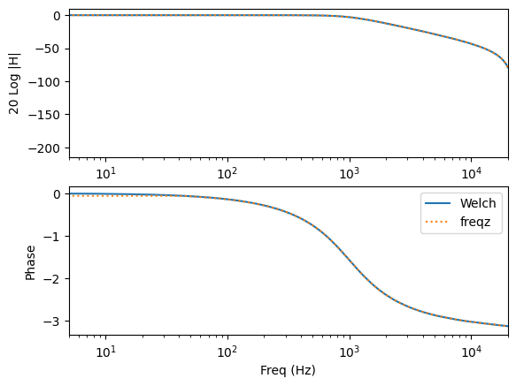
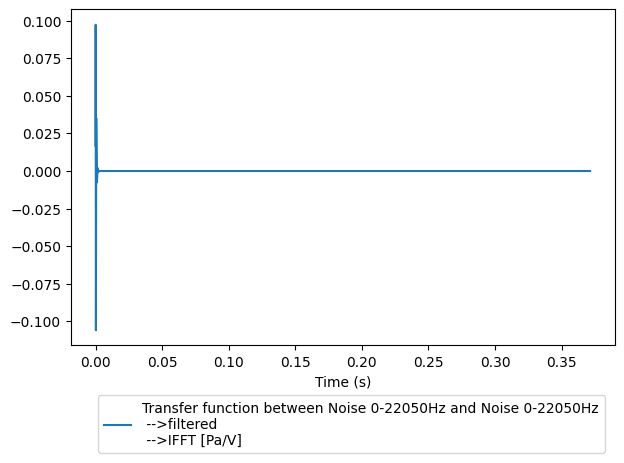

Tutorial 2: Spectral class
The measpy.Spectral class represents signals in the Fourier space
An object of the Spectral class has the following main properties:
fs: a sampling frequency (int)desc: a description (string)unit: a physical unit (unyt.unit)values: a 1D array (float) containing the values of the Fourier spectrumfull: a boolean value indicating if the spectrum values are given up to the sampling frequencyfsor the Nyquist frequencyfs/2
#This is here in case we want to use the local measy directory
import sys
sys.path.insert(0, "..")
import measpy as mp
import numpy as np
import matplotlib.pyplot as plt
Let us create a white noise signal of duration 5 seconds, with the sampling frequency fs=44100 Hz
noise = mp.Signal.noise(freq_min=0,freq_max=22050,fs=44100,dur=20)
print(noise)
noise.plot()
measpy.Signal(fs=44100,
desc='Noise 0-22050Hz',
freq_min=0,
freq_max=22050,
_rawvalues=[ 2.63749506 1.21468672 -0.39634116 ... 0.90318963 1.48549855
0.64043848],
)
<Axes: xlabel='Time (s)'>

Let us now filter this noise using the method Signal.iir, which is basically a wrapper function around scipy.signal.filter.iirfilter and scipy.signal.filter.sosfilt.
Below, the white noise is filtered above 1000Hz using a 6th-order butterworth filter (default type)
noisef = noise.iir(N=2,Wn=1000,btype='lowpass',ftype='butter')
We now calculate and plot the FFT
As the signal is real valued, it is fair to use the rfft, which only returns the (complex) values of the FFT up to the Nyquist frequency.
rfft is a method of measpy.Signal class, that returns an object of the measpy.Spectral class
By default, with no arguments, the plot method of the Spectral class plots the dB amplitude (ref. unity) and phase, with logarithmic frequency scale, and returns an array of two axes.
noisesp = noisef.rfft()
print(noisesp)
noisesp.plot()
measpy.Spectral(_values=[-4.15815877e+00+0.00000000e+00j 8.68094334e+02+3.48103038e+02j
-9.17516659e+02-2.18577396e+02j ... -1.18209042e-01+9.07961848e-07j
-1.18209042e-01+4.54029362e-07j -1.18209042e-01+0.00000000e+00j],
desc='Noise 0-22050Hz
-->filtered
-->RFFT',
fs=44100,
full=False,
norm='backward',
odd=False,
)
array([<Axes: xlabel='Freq (Hz)', ylabel='20 Log |H|'>,
<Axes: xlabel='Freq (Hz)', ylabel='Phase'>], dtype=object)

The measpy.Spectral.irfft method allows to go back the time domain…
noisesp.irfft().plot()
<Axes: xlabel='Time (s)'>

To compute the frequency response of the filter, we can use Welch’s method for transfer function estimation.
Let us do this and compare with the analytical frequency response given by scipy.signal.sosfreqz
sp = noisef.tfe_welch(noise,nperseg=2**14)
ax = sp.plot(label='Welch')
from scipy.signal import iirfilter, sosfreqz
sos = iirfilter(N=2,Wn=1000,btype='lowpass',fs=noise.fs,output='sos',ftype='butter')
f,h = sosfreqz(sos,fs=noise.fs)
ax[0].plot(f,20*np.log10(abs(h)),label='freqz',ls=':')
ax[0].set_xlim([5,20000])
ax[1].plot(f,np.unwrap(np.angle(h)),label='freqz',ls=':')
ax[1].set_xlim([5,20000])
ax[1].legend()
<matplotlib.legend.Legend at 0x7f82e645c510>

Units
Units are preserved during all the spectral/signal analyses.
To illustrate this, let us create a noise signal, in Volts, and another one in Pascals, and do some Fourier analyses with these signals.
# voltage signal
voltage = mp.Signal.noise(freq_min=0,freq_max=22050,fs=44100,dur=20).similar(unit='V')
# Consider the pressure we have measured is linearly dependent
# on the voltage. In this example we simply create the pressure signal
# by arbitrarly filtering the voltage, an give the resulting signal
# the dimension of Pascals (the similar function is very convenient for that)
pressure = voltage.iir(N=2,Wn=[1000,3000],btype='bandpass',ftype='butter').similar(unit='Pa')
v_fft = voltage.rfft()
p_fft = pressure.rfft()
print("Unit of v_fft is "+str(v_fft.unit))
print("Unit of p_fft is "+str(p_fft.unit))
a=v_fft.plot()
p_fft.plot(ax=a)
a[0].set_xlim([20,20000])
a[0].set_ylim([-50,180])
a[1].set_xlim([20,20000])
Unit of v_fft is V
Unit of p_fft is Pa
(20, 20000)

The Welch’s method implemented in measpy for transfer function estimation preserves units, as illustrated with the command below, which computes the transfer function between voltage and pressure. The resulting spectral data should have the dimension ‘Pa/V’.
tf=pressure.tfe_welch(voltage,nperseg=2**14)
print(tf.unit)
a=tf.plot()
a[0].legend()
Pa/V
<matplotlib.legend.Legend at 0x7f82e60817d0>

Spectral object can be added, multiplied, divided, etc., provided they have compatible sampling frequency, duration and units.
For instance, it is not allowed to add voltage and pressure spectra. This should raise an Exception.
v_fft+p_fft
---------------------------------------------------------------------------
Exception Traceback (most recent call last)
Cell In[9], line 1
----> 1 v_fft+p_fft
File ~/Documents/python/measpy/examples/../measpy/signal.py:2128, in Spectral.__add__(self, other)
2122 """Add something to the spectrum
2123
2124 :param other: Something to add to
2125 :type other: Spectral, float, int, scalar quantity
2126 """
2127 if type(other) == Spectral:
-> 2128 return self._add(other)
2130 if (type(other) == float) or (type(other) == int) or (type(other) == complex) or isinstance(other, numbers.Number):
2131 print('Add with a number without unit, it is considered to be of same unit')
File ~/Documents/python/measpy/examples/../measpy/signal.py:2105, in Spectral._add(self, other)
2096 """Add two spectra
2097
2098 :param other: Other Spectral to add
(...)
2101 :rtype: Spectral
2102 """
2104 if not self.unit.same_dimensions_as(other.unit):
-> 2105 raise Exception(
2106 'Incompatible units in addition of Spectral obk=jects')
2107 if self.fs != other.fs:
2108 raise Exception(
2109 'Incompatible sampling frequencies in addition of Spectral objects')
Exception: Incompatible units in addition of Spectral obk=jects
It is however possible to multiply them (even if the reason to do this is questionnable…). The units are preserved during the operations
prod = v_fft*p_fft
print(prod.unit)
Pa*V
When going back to time domain, the units are also preserved. For instance, compute the Green’s function of our LTI system that transforms voltage to pressure, whose transfer function has already been estimated previously (tf Spectral object created above).
As it should appear in the plot below, the dimension of the Green’s function is now Pa/V
G=tf.irfft()
G.plot()
<Axes: xlabel='Time (s)'>
